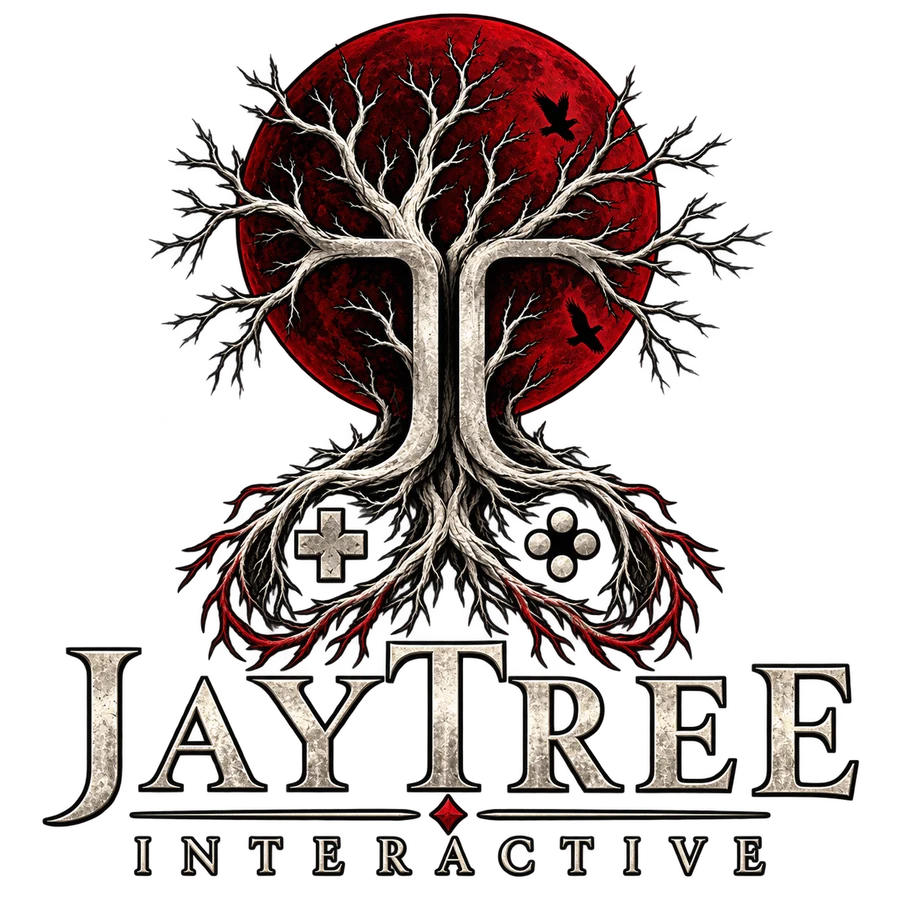
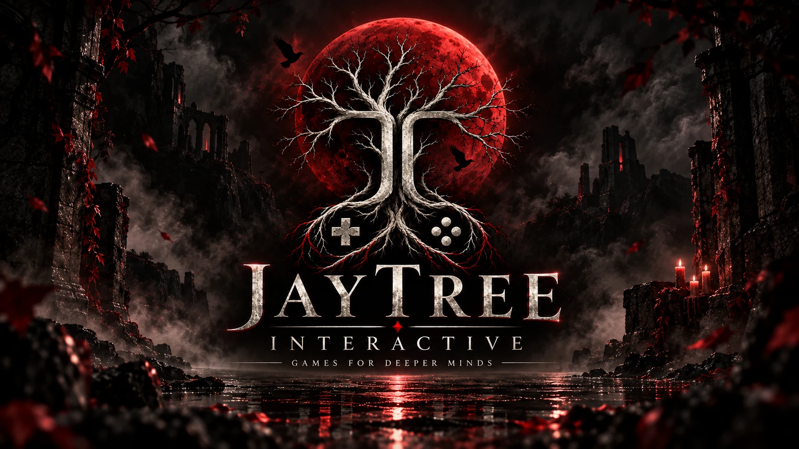
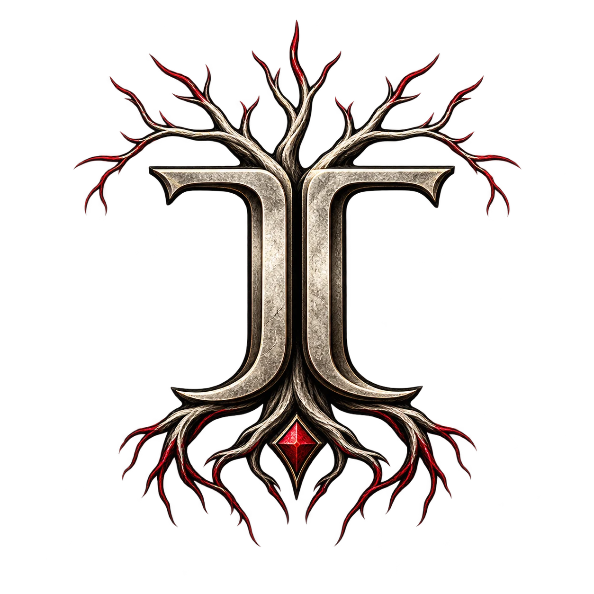
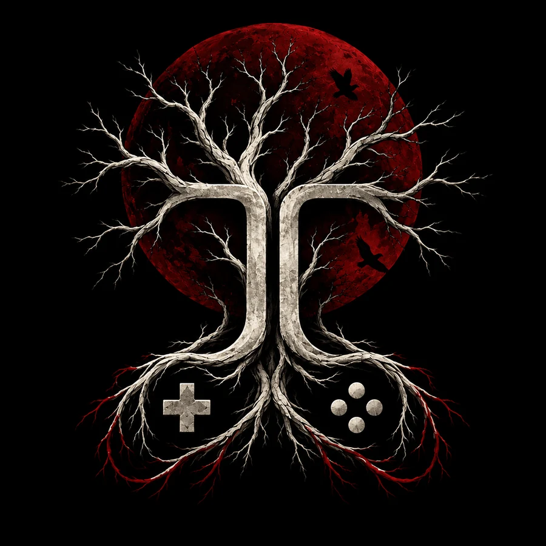
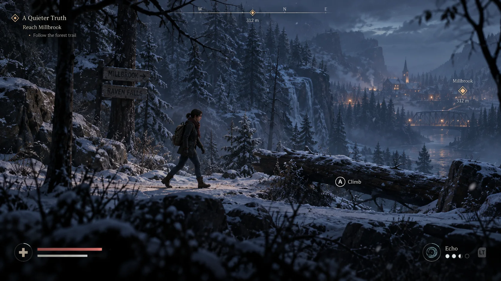
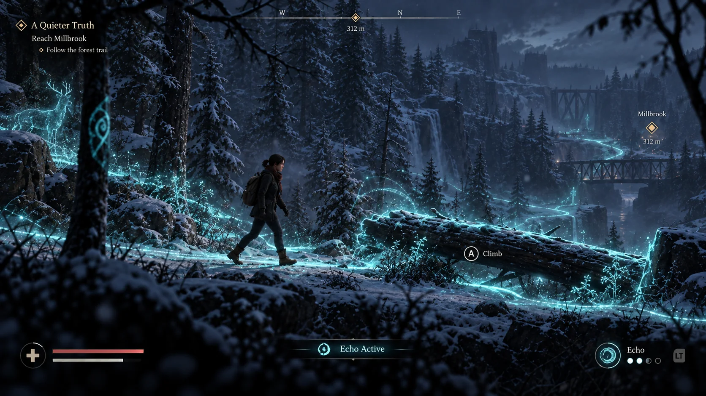
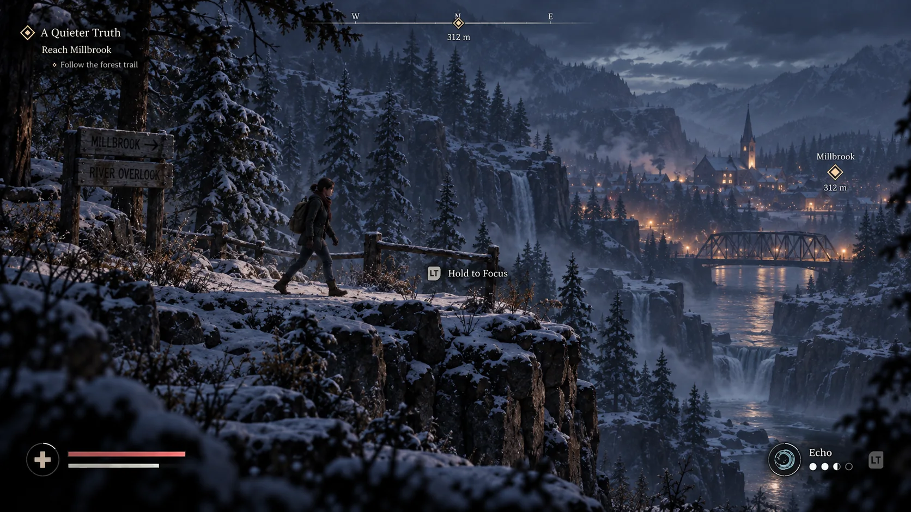
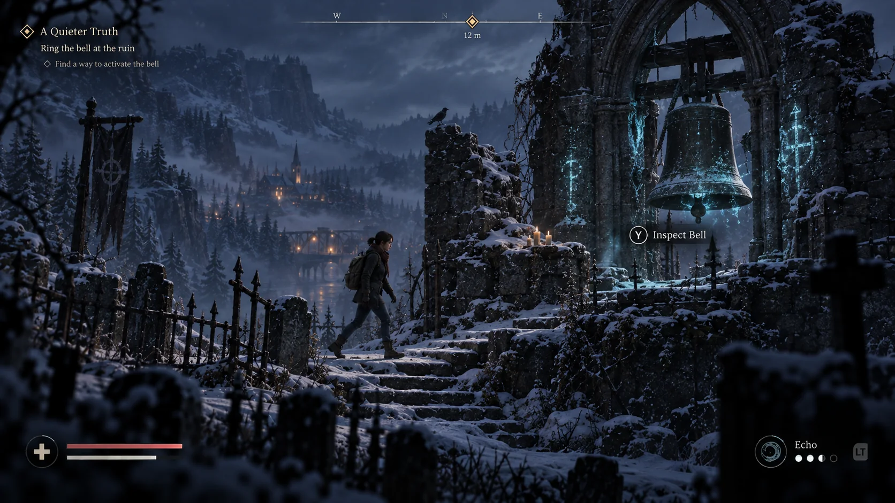

In development
The Hollow Bell
A narrative mystery game rooted in Millbrook Falls: atmosphere, clues, environmental storytelling, and a world designed to reward looking closer.


Hidden path discoveredJayTree Interactive is where the mysteries leave the page behind. What begins as story becomes place, atmosphere, evidence, and world.
You were not supposed to arrive here by accident. This page tracks early game-world fragments, experiments, atmospheres, and interactive mysteries still taking shape beneath JayTree Books.
These are not release promises. They are signals from active development — worlds, systems, atmospheres, and investigative ideas becoming playable form.

A narrative mystery game rooted in Millbrook Falls: atmosphere, clues, environmental storytelling, and a world designed to reward looking closer.

The case-file idea is being pushed toward interactive play: evidence, contradictions, choices, and the pressure of deciding what matters before the truth is revealed.
Concept art and presentation targets for the current cinematic 2D/2.5D game — built to preserve the same locations, systems, and landmarks when the world expands into full 3D.

The trail is never as direct as it first appears. Quiet traversal establishes Claire, the winter wilderness, natural obstacles, and Millbrook as a real destination beyond the playable lane.

Some things leave a path. Some things leave a memory. Echo reveals what the world has not finished saying — hidden routes, symbols, remnants, and evidence made briefly legible.

The town is visible long before it is understood. Distance promises answers; arrival complicates them. The overlook establishes the bridge, river, waterfalls, church, cliffs, and valley as connected geography.

A place of silence, ritual, and unanswered history. The bell does not simply wait to be found. It waits to matter — turning traversal into an authored investigation and story-state change.
Nothing here is a roadmap with dates. Think of it as a signal leaking out of the workshop.
This page will change as the games become real enough to show.
New fragments may appear here before they appear anywhere else.
The mark appears where roots, records, and choices meet. That may matter later.
Close the hidden path →